Playground · 2026
Playground acquisition diligence
Playground was acquired in September 2026 by a public Fortune 500 company. The buyer had three separate consulting firms working on diligence. On our side, it was just me. We did not hire a banker, and the deal team was the three founders and me. Nobody else at the company knew until it was done.
Playground also did not have a finance person when I started. I built the operating model and the pre-diligence materials from scratch. When the buyer sent their request list, every answer went back with a file I built during diligence.
The screenshots below are redacted. I blacked out the numbers and removed everyone's name except mine.
01 The deal tracker
The buyer sent over 400 requests in a spreadsheet and stood up the VDR. I built an app to track them internally. Each request had an owner, a status, and a due date, and the app synced with the data room every night.
I also connected Claude to the tracker. It could read a request, draft an answer, and attach a file. I checked it before anything was posted.
The app had a page for the merger agreement too. Each clause had a risk level and a suggested response, and I sent our comments to counsel from there.
The buyer's consultants' written questions had their own queue. We drafted, reviewed, and signed off on every answer in one place.
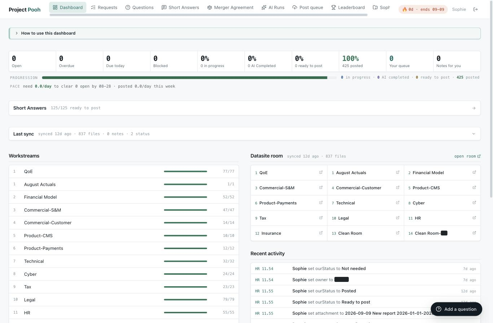
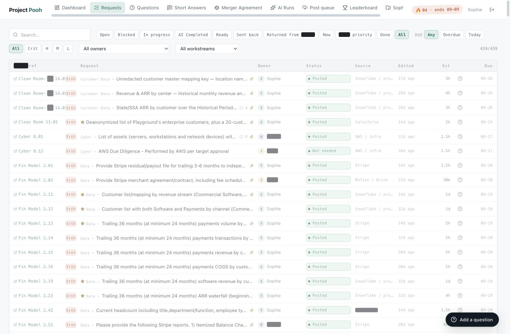
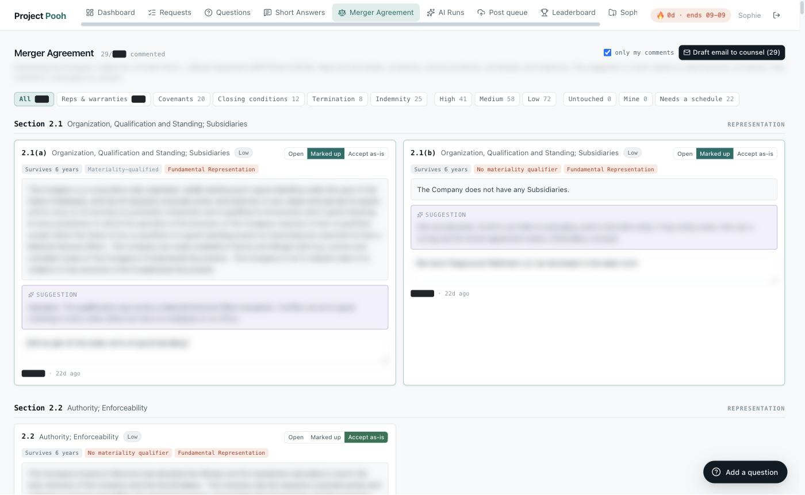
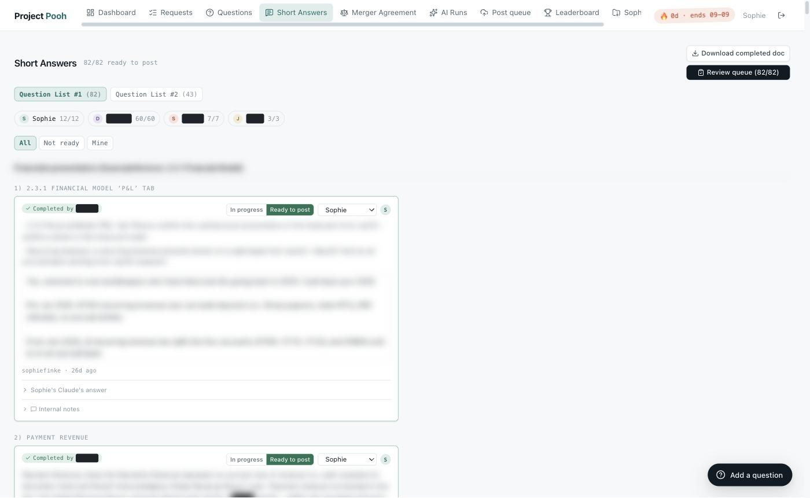
02 The Pooh Report
I sent the deal team an email every night at 9pm. It had the day's progress, what was overdue, and a leaderboard. Claude wrote a short “gossip column” from what changed in the tracker that day.
Each day gave us a "happiness meter" from the perspective of the buyer's diligence lead (an estimate). It went down when items were overdue or reopened. I changed his LinkedIn picture to have twelve different facial expressions based on the ranking. Don't worry, we sent it to him after the deal, and he loved it.
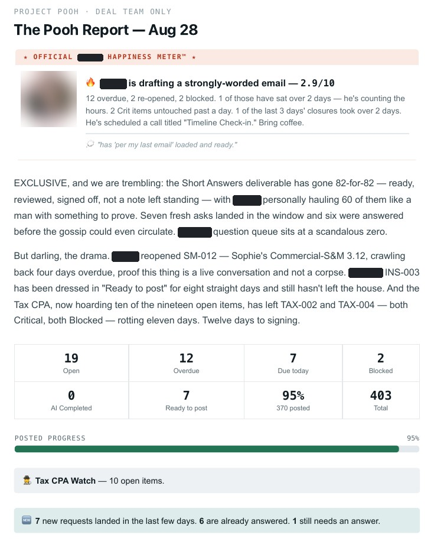
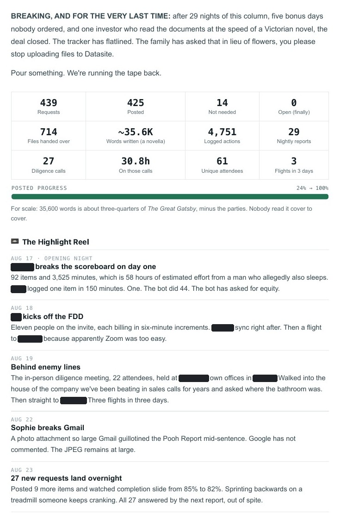
03 Burn and runway
Alongside the deal I was asked a simple question: if this doesn't go through, how long is our runway and what should we cut?
The only true way the team tracked burn was looking at the bank account balance each month. There was no granular deep dive.
I pulled the raw data from each source and tied it to the books. Then I built a dashboard for burn and runway on top of it.
It has a cash forecast that I tested against past months. It also has a cut board that shows when each cut would actually hit the bank.
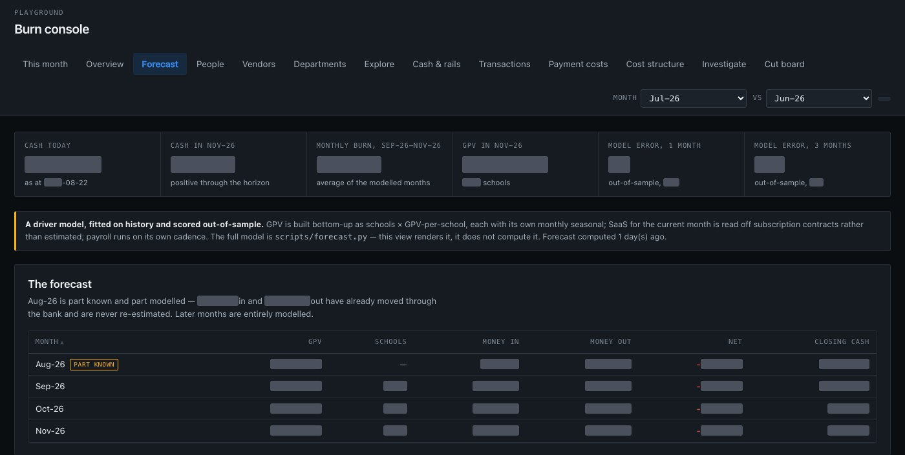
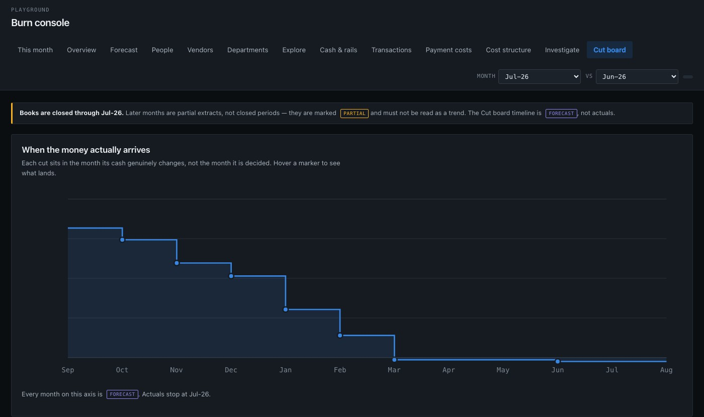
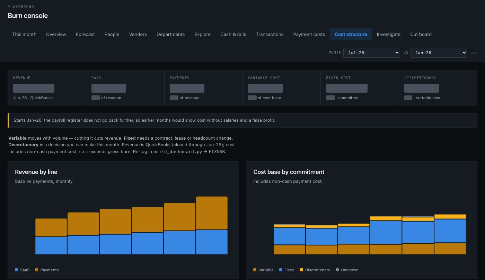
04 The operating model
For the buyer: Excel
The buyer's first ask was a financial model and a forecast. I built one in Excel from scratch, since nothing existed since the Series A docs. Revenue starts from the number of active schools and builds up to payments and SaaS. Headcount and opex come after that.
Every line ties back to the general ledger. A script builds the whole workbook, and it checks every tie-out before I send a new version.
For the team: a dashboard
The internal team did not speak Excel. They kept asking for fewer spreadsheet-style views, so I built them a dashboard on top of the same model.
It runs the same formulas in the browser. Anyone on the team (with Google Auth access) could move a lever and see what happened to cash and runway without opening a workbook.
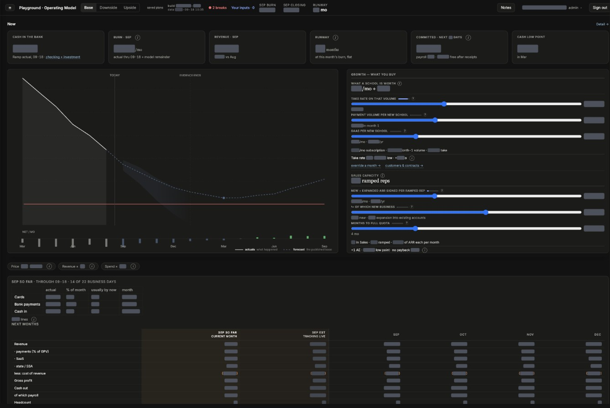
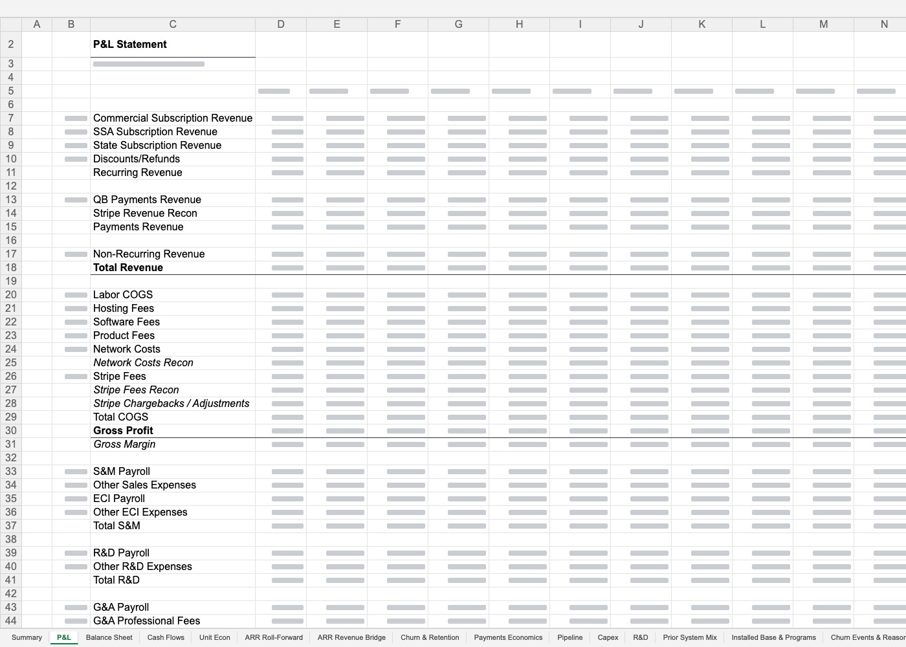
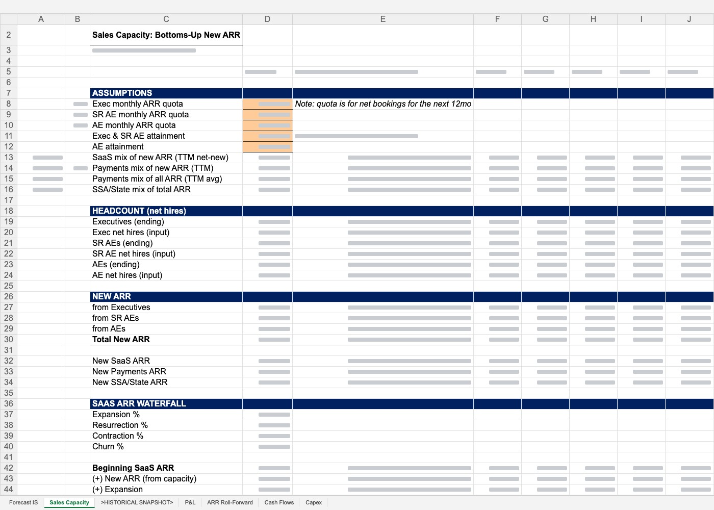
05 What went into the data room
Every request went back with something I built during diligence. These were the bigger ones.